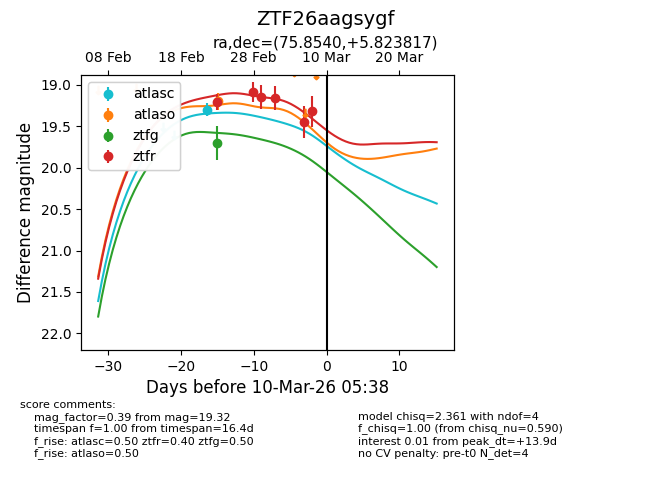
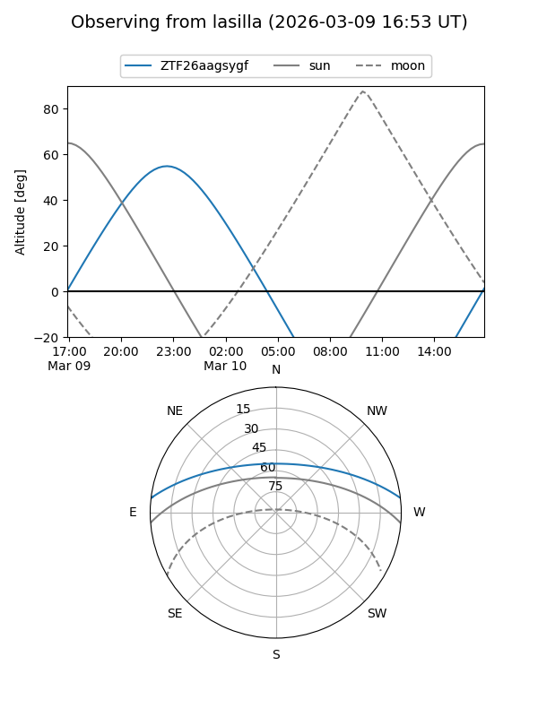
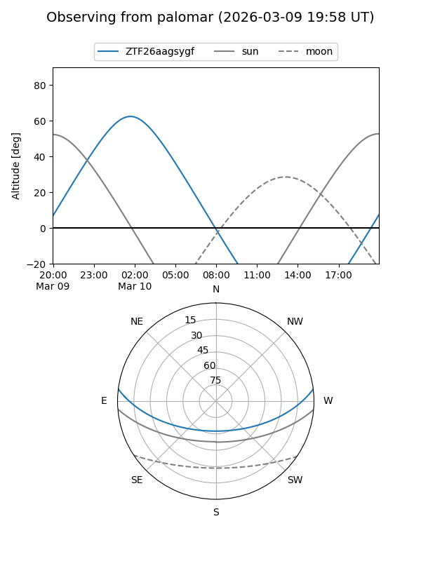
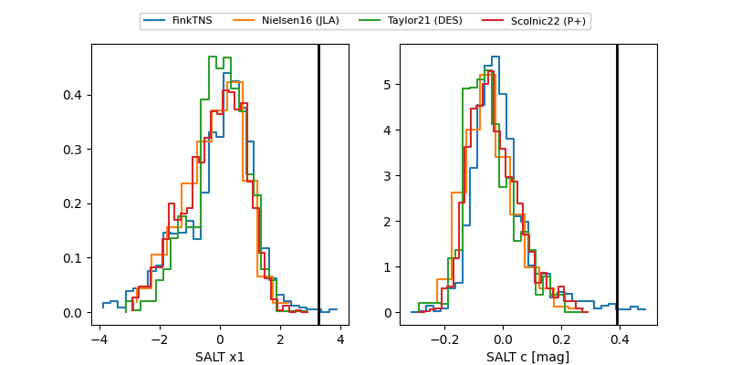

ZTF26aagsygf
Target ZTF26aagsygf at 2026-03-10 05:39
Aliases and brokers:
FINK: link
Lasair: link
ALeRCE: link
alt names
ZTF26aagsygf (ztf,fink_ztf)
Coordinates:
equatorial (ra, dec) = 75.8540,+5.82382
equatorial (HMS+DMS) = 05:03:24.95,+05:49:25.74
galactic (l, b) = (194.4484,-20.84053)
Flags:
Photometry:
last atlasc=19.30, atlaso=19.20, ztfg=19.70, ztfr=19.32
1 atlasc, 1 atlaso, 1 ztfg, 6 ztfr detections
Lightcurve

Visibility


Additional plots
